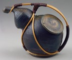

|  | Richard Bresnahan American, Teapot 1995 Stoneware with natural glazes 6-3/4 inches high, 8 inches long 96.25.2a,b |
This is a clip from the video "Clay, Wood, Fire, Spirit"© produced by John Whitehead and KTCA-TV. In the video, Minnesota potter Richard Bresnahan shares some of his experiences while training as a potter in Japan. He also talks about his motivations for creating the kind of pottery he makes. (Story length is _ minutes _ seconds)
These presentations require the RealAudio player. It is available from www.real.com.